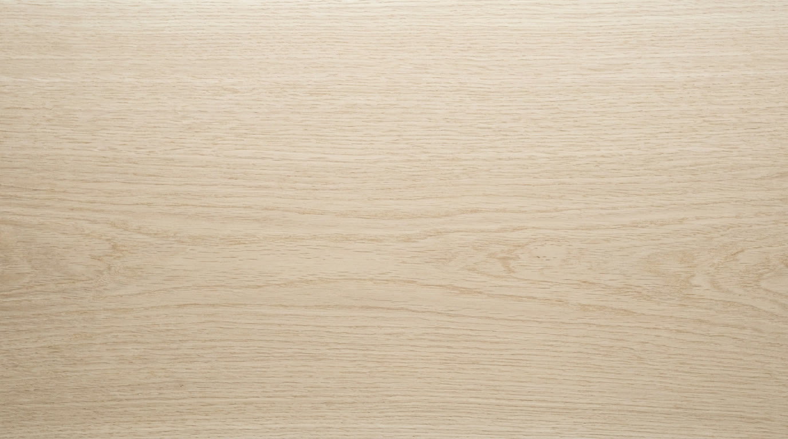
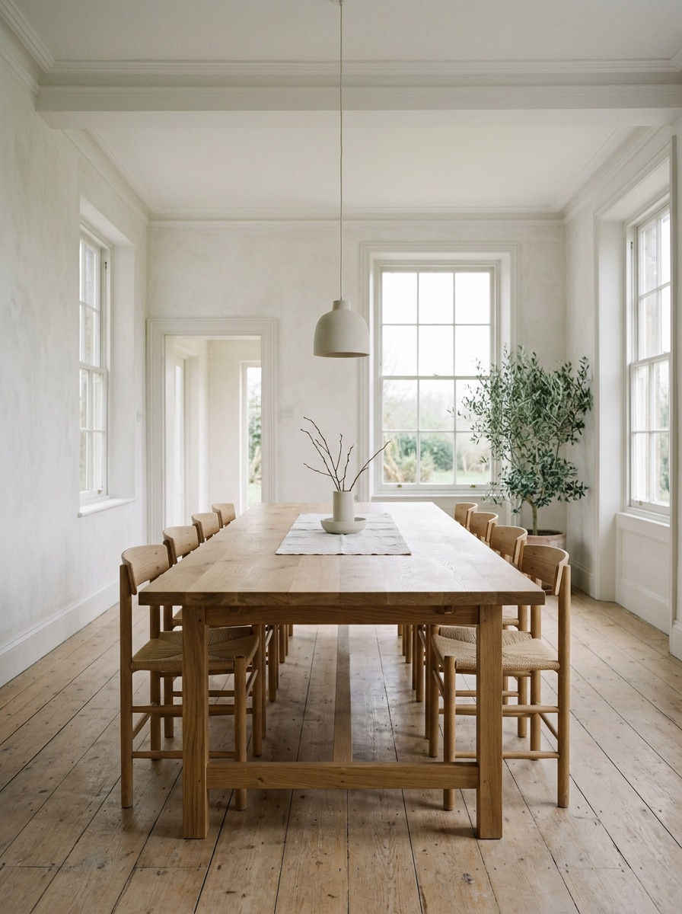
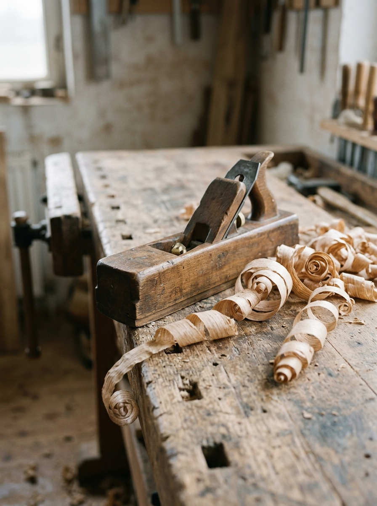
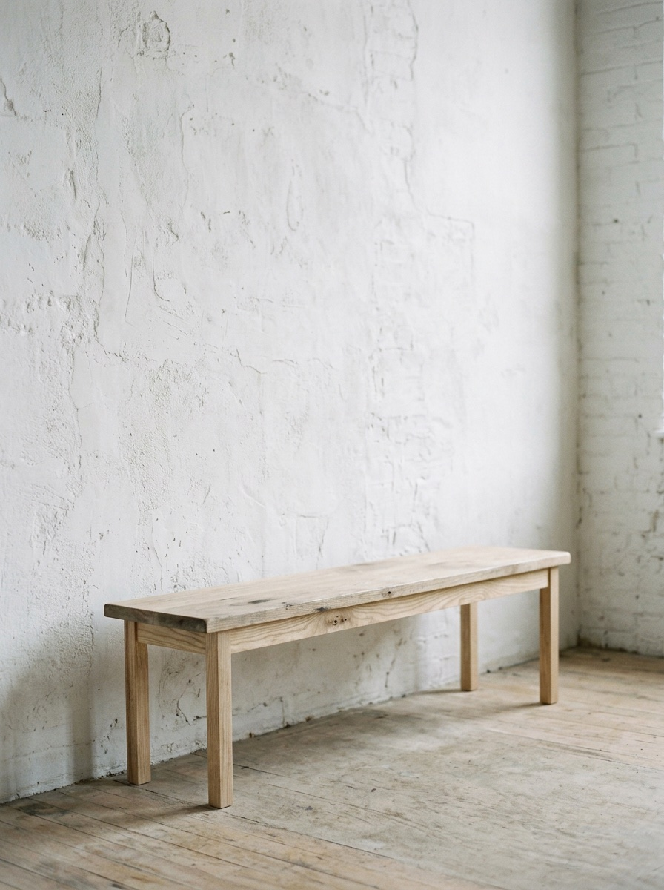
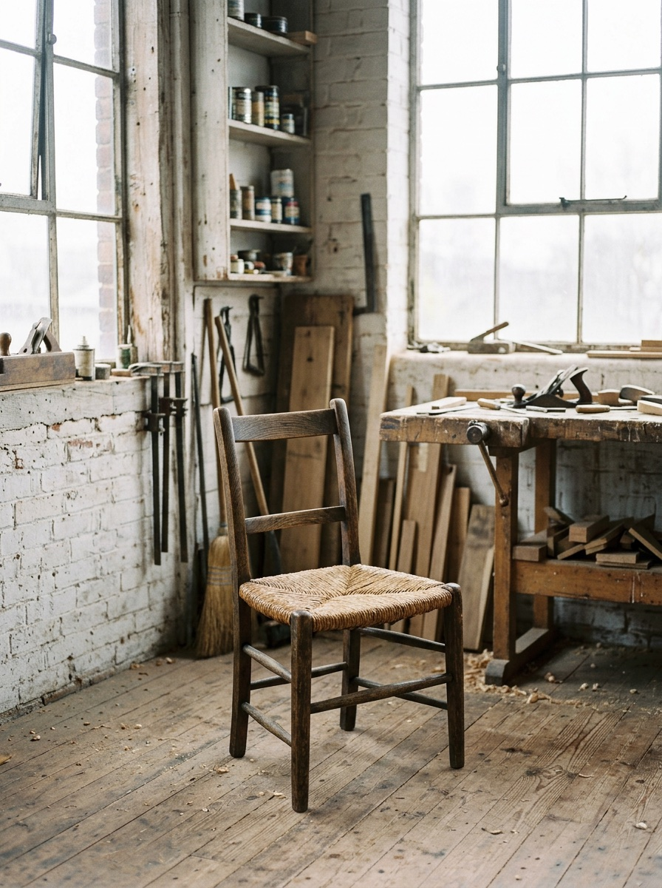
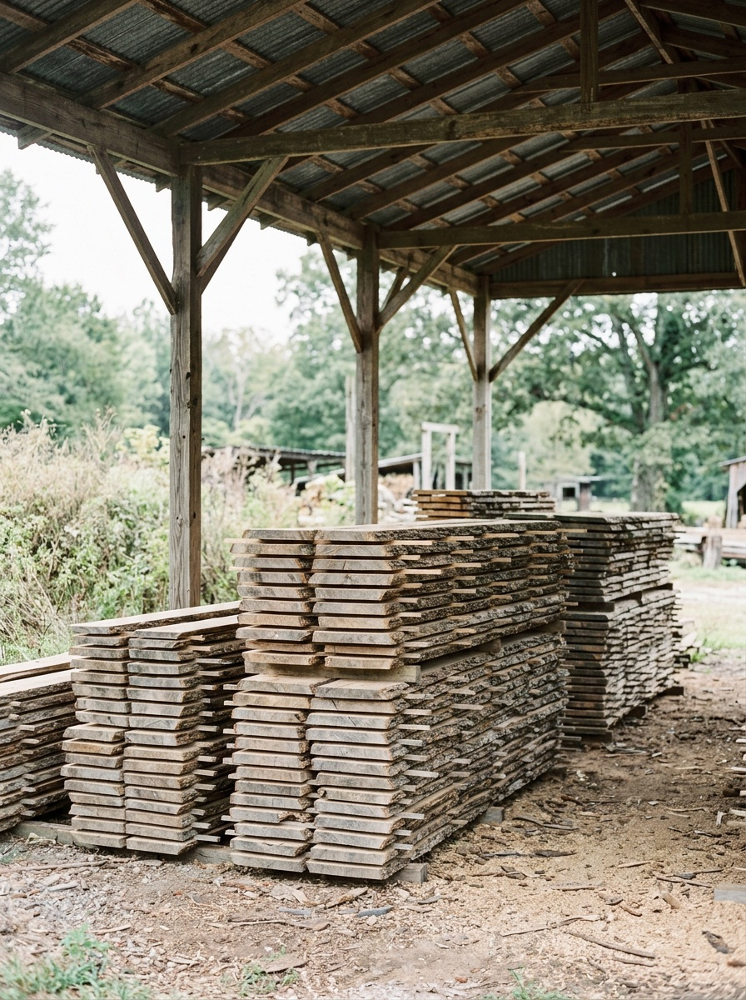
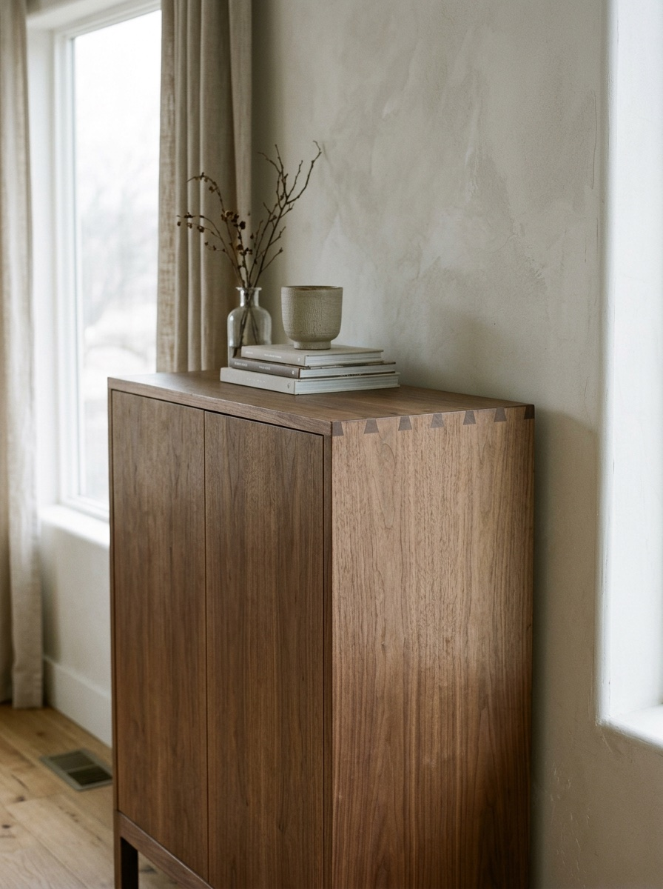

Seam Transitions

Grain
Furniture by hand
Since 2008
(01) Workshop
We make tables, benches and chairs by hand from oak, ash and walnut, planed stroke by stroke until the grain shows.
-

Long Table 2025
-

The Plane 2024
-

Ash Bench 2024
-

Rush Chair 2023
-

Seasoning 2022
-

Walnut Cabinet 2021